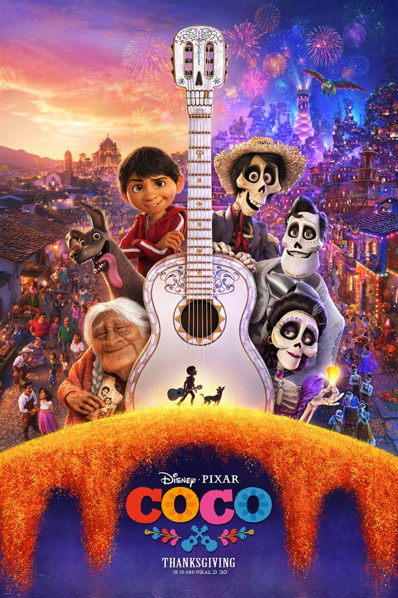

<section class="article-disney-plus py-5">
  <div class="container">
    <div class="row justify-content-center">
      <article class="col-sm-8">
        <h2>Coco</h2>
        <h5>Une ode à la culture mexicaine…, 06 février 2021 </h5>
        <p>
          « Coco » est un long métrage animé, d’une durée de 1h45, réalisé par Adrian Molina et Lee Unkrich, sorti le 29 Novembre 2017.
        </p>
        <br>

        <div class="article_img">
          
        </div>

        <br>

          <p>
            <strong class="emphase">De quoi ça parle :</strong> Coco raconte l’histoire de la famille de Miguel, au sein de laquelle la musique est bannie depuis plusieurs générations.
          </p>

          <p>
            <strong class="emphase">Mon avis :</strong> Ce long métrage est une merveille, par ses graphismes c’est une véritable fête à lui seul. Les personnages sont profonds et les musiques, magnifiques. Un savoureux mélange qui vous fera vibrer.
            <br>
            C’est une excellente façon de montrer aux enfants la culture mexicaine et d’aborder de manière plus sereine, le thème de la mort avec les plus jeunes. Malgré un thème « triste », l’humour est associé pleinement à l’émotion.
            <br>
            Au-delà d’un simple animé, c’est un message universel sur le travail de mémoire de nos ancêtres.
            <br>
            Pixar ne défaille pas avec cette œuvre et démontre une fois de plus son talent pour associer le divertissement à un thème éprouvant.
          </p>

          <p>
            <strong class="emphase">Anecdote :</strong> Coco rend hommage à tous les styles de musique mexicaine.
L’histoire se rapproche de « La légende de Manolo ».
          </p>

        <br>

        <iframe width="560" height="315" src="https://www.youtube.com/embed/N3chVJm1XYI" title="YouTube video player" frameborder="0" allow="accelerometer; autoplay; clipboard-write; encrypted-media; gyroscope; picture-in-picture" allowfullscreen></iframe>

        <br>

        <p class="signature text-end"><strong>Angèle</strong></p>
      </article>
    </div>
  </div>
</section>


